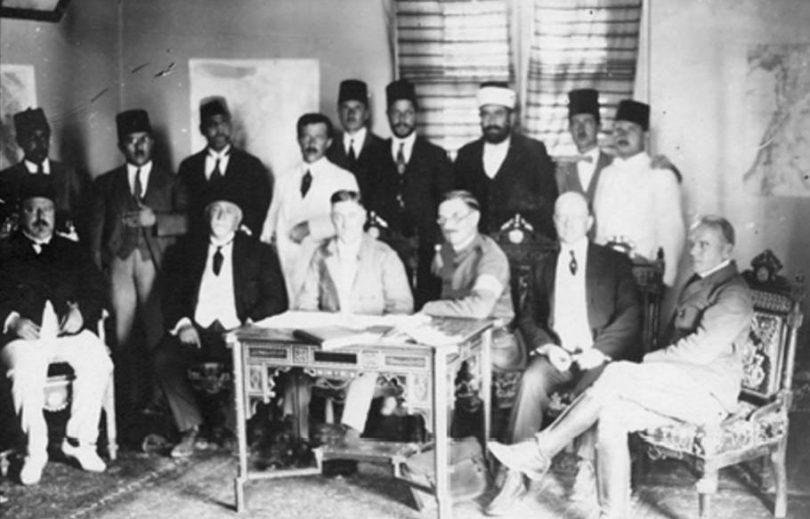
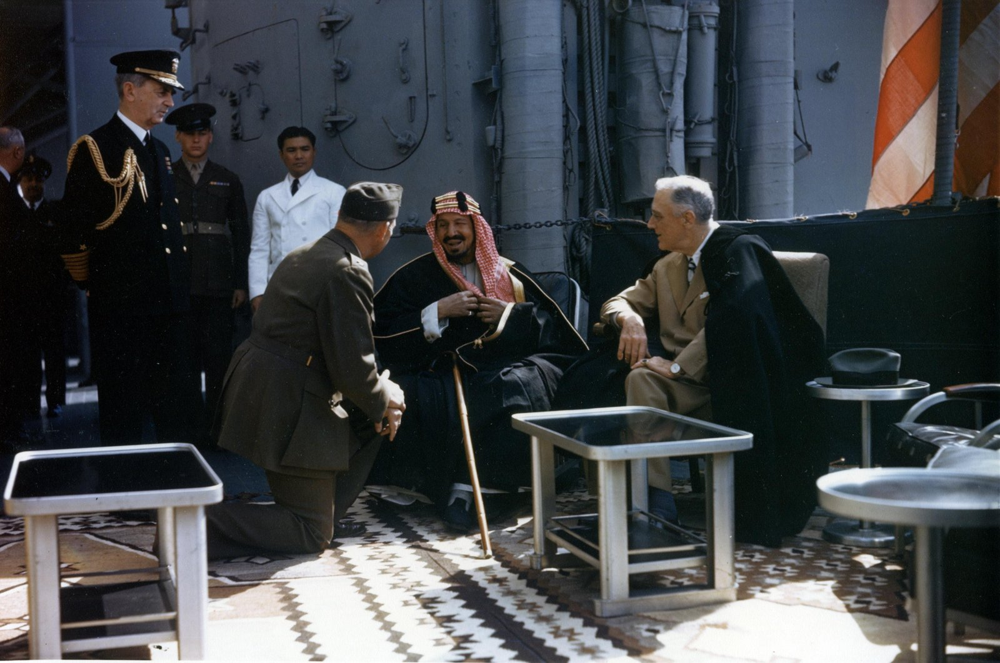

1917–1945
1917–1945: American Ideals Become International
13World War I and imperial bargains
In the light of the waning Ottoman Empire, there were hard diplomatic choices that US policymakers needed to make on the issue of the future of its territories. There was the Sykes-Picot Agreement of 1916 which showed the imperialistic goals of Britain and France over some of the territories in the Ottoman Empire. On the other hand, there was the Balfour Declaration of 1917 in which Britain expressed its support for the creation of a national homeland for Jews in Palestine. While both the documents did not emanate from the US foreign policy, President Woodrow Wilson supported the latter.
14Wilson's Fourteen Points, January 8, 1918
Woodrow Wilson, President of the United States, in his address to the Congress, emphasized the necessity of open diplomacy, fair colonial policies, and autonomy of development of nations within the Ottoman Empire. Point V highlighted the importance of consideration of the interests of people who were in the position of colonized nations. Point XII of Wilson mentioned the idea of Turkish sovereignty but at the same time stressed the necessity of autonomous development of other nations within the Ottoman Empire. Point XIV implied the establishment of an international institution which would secure political independence and territorial integrity. It should be noted that even with such ideas presented by Woodrow Wilson, his vision could not secure the independence of all populations immediately. Moreover, there were some obstacles to the implementation of American political ideals connected with the imperial ambitions of Britain and France and the necessity to maintain relations with allies of the USA in World War I.

15The King–Crane Commission, 1919
In 1919, Henry Churchill King and Charles R. Crane headed an American delegation whose task was to find out the aspirations of the population in the former Ottoman lands. The commission toured through the territory, gathered petitions, and consulted with local leaders. The report showed that the Syrian population was against foreign domination, desired independence, and had other political aspirations in Palestine.

While the mission urged taking into account the views of the locals, its findings had little impact on the post-war order. The mandates were set up for Iraq and Palestine by Britain, and France acquired Syria and Lebanon. While the idea was to prepare the territories for self-government, the Europeans kept strong political power. Thus, the result of the King-Crane Commission illustrated the inefficiency of American idealism in the face of European imperialism. While the U.S. promoted the principles of self-determination, it was unable to guarantee their implementation.
16Mandates: independence promised and postponed
Britain administered Iraq and Palestine, later separating Transjordan's administration; France controlled Syria and Lebanon under the mandate system. The framework described a path toward self-government while mandatory authorities retained substantial power. The Iraqi revolt of 1920 opposed British control. Faisal I's monarchy formed under British influence; Iraq became formally independent in 1932, though British influence persisted. In Syria the Great Syrian Revolt of 1925–1927 challenged French authority. In Palestine, British rule increasingly faced incompatible Jewish and Arab national claims. America did not design or administer these main mandates, but participated in an international environment where the rhetoric of autonomy coexisted with external control.
17Oil and the Red Line Agreement
Growing dependence on petroleum for industry and military systems made the region strategically significant. American firms participated in the Turkish Petroleum Company, later Iraq Petroleum Company. The 1928 Red Line Agreement regulated commercial cooperation among participating firms. Commercial investment must be distinguished from official U.S. policy; nonetheless, the convergence between oil and strategic planning intensified by World War II.
18Saudi Arabia and the 1933 oil concession
Saudi Arabia became a kingdom in 1932 under Abdulaziz Ibn Saud. Standard Oil of California obtained an oil concession in 1933, and commercially significant oil was discovered in 1938. Saudi rulers sought revenue and development, while the U.S. company sought petroleum. Saudi leaders retained agency in negotiation. Cooperation with a monarchy did not inherently violate sovereignty, but it showed that sharing American democratic institutions was not a prerequisite for close American ties.
19Wartime security planning, 1943
A March 30, 1943 letter from Secretary of State Cordell Hull to Roosevelt discussed Saudi oil and military interest. A June 8 Joint Chiefs memorandum discussed the importance of foreign oil reserves and American strategic access. Here petroleum became explicitly associated with national security, beyond private profit. It created incentives for Washington to cooperate with oil-producing governments and protect a stable regional order.
20Roosevelt meets Ibn Saud, February 14, 1945
The meeting between President Franklin D. Roosevelt and King Abdulaziz Ibn Saud took place in Great Bitter Lake of Egypt on February 14, 1945. The meeting addressed the topics of the future of Palestine, Jewish refugees, Arab political rights, and independence of Syria and Lebanon. While President Roosevelt was supportive of the independence of Syria and Lebanon, he refused to use the U.S. military force to ensure this. However, as the role of Saudi oil and security became more significant, the need of Washington to develop a good diplomatic relationship with the Saudi royal family became crucial. This example proves that American leaders tried to find the balance between their principles and humanitarian beliefs on one hand, and their interests on another. American ideals and interests were not always opposing factors.

Chapter connection: With the year 1945 came concepts such as sovereignty and self-governance to America’s foreign policy rhetoric alongside the growing significance of the Middle East because of oil resources and war strategy.